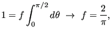

Next: Case Study 4: Equation Up: Monte Carlo Simulation Previous: Case Study 2: MC
In this case study, we consider a slightly different system than the
hard-disk system in the previous case study. Here, we imagine that
pairs of disks are tethered together to form dumbbells. The
“bond-length” of a dumbbell is a constant parameter,  . We will
again confine the dumbbells to a circle.
. We will
again confine the dumbbells to a circle.
What is new is how we have to consider the trial moves for this system. We cannot simply select a random particle and try to displace it, because this is likely to violate the constant bond-length of the dumbbell that particle belongs to. How then do we generate new configurations? A simple idea is to use two kinds of trial moves, translation of entire dumbbells and rotation of dumbbells around their centers of mass. This was originally presented in Sec. 3.3.3. In order to implement an MC code with more than one trial move, we must include a “trial move selection rule” which randomly selects a trial move based on their user-defined “weights”.
The code hdisk-dumbbells.c implements a MC simulation
of hard-disk dumbbells. One specifies a number of particles using -N # at the command line, and the number of dimers is assumed to be  /2. One can specify two of
/2. One can specify two of  ,
,  (areal particle density), or
(areal particle density), or  (confining domain diameter). One can also specify
(confining domain diameter). One can also specify  (maximum dimer displacement distance) and
(maximum dimer rotation angle), as well as the dimer bond length
(maximum dimer displacement distance) and
(maximum dimer rotation angle), as well as the dimer bond length  . An XYZ-format trajectory can be saved every
. An XYZ-format trajectory can be saved every -fs cycles using -traj my_traj.xyz.
Let's run this program for  = 200,
= 200,  = 0.6,
= 0.6,  = 1,
= 1,
 , for 10,000 cycles, saving 1000 snapshots in
, for 10,000 cycles, saving 1000 snapshots in traj.xyz:
cd cd cheT580-202035/instructional-codes/my_work mkdir hddb_run cd hddb_run gcc -O3 -o hddb../../originals/hdisk-dumbbells.c -lm -lgsl ./hddb -rho 0.6 -dr 1 -da 3.1 -dw 0.5 -N 200 -traj traj.xyz -fs 10 -nc 10000 # R = 10.30; rho = 0.60; N = 200; r_0 = 1.00; s = 1.00; disp_wt = 0.50, seed = 23410981 Results: Number of trial moves: 2000000 Maximum displacement length: 1.000 Number of displacement attempts: 999499 Maximum rotation angle (radians): 3.100 Number of rotation attempts: 1000501 Displacement acceptance ratio: 0.344 Rotation acceptance ratio: 0.405 Reject Fraction Out-of-bounds: 0.10037 Reject Fraction Overlap: 0.89963 Trajectory saved to: traj.xyz ls hddb traj.xyz
As with the hard disks, we can use VMD to visualize frames in this trajectory. Fig. 8 shows three representative snapshots from this simulation, along with a special view showing the histories of four particular dimers. This last rendering serves to indicate that dimers have mostly explored the entire domain for this number of cycles (is this the case for 1,000 cycles?).
|
|
Consider the following question: Does the acceptance ratio of rotational moves depend upon the weight given to displacement moves? Why or why not? Below is a plot of the acceptance ratio vs. the maximum displacement for a system of 100 dumbbells at a density of 0.5, for various displacement move weights between 0.1 and 0.9. As you can see, there appears to be no effect on the acceptance of trial displacements if we change how frequently we perform them relative to trial rotations.
 |
Let's consider computing an observable function that describes how the molecules order themselves in the circular domain. One such meaningful function we'll call , where
| (94) |
To explore this function, the code hdisk_dumbbells_order.c was copied from hdisk_dumbbells.c.
In hdisk_dumbbells_order.c, I introduce the arrays theta[] to hold a tally of
values and Rcount[] to hold a count of hits in each radial bin, so that
= theta[i]/Rcount[i] - 0.5, where i is the radial bin index set by  and a specified number of bins. Fig. 10 shows
and a specified number of bins. Fig. 10 shows  vs
vs  for a hard-disk dumbbell system at density 0.66 with 400 particles (200 dumbbells), run for 500,000 cycles. We can see some interesting structure here, notably that it looks like, on average, there is very little ordering at the periphery and it becomes substatially higher as we get closer to the origin, though still not very strong. Notably, at about 1
for a hard-disk dumbbell system at density 0.66 with 400 particles (200 dumbbells), run for 500,000 cycles. We can see some interesting structure here, notably that it looks like, on average, there is very little ordering at the periphery and it becomes substatially higher as we get closer to the origin, though still not very strong. Notably, at about 1  from the periphery, we see a dip in
from the periphery, we see a dip in  that might indicate an enrichment in tangentially-oriented dumbbells.
that might indicate an enrichment in tangentially-oriented dumbbells.
|
|
A final note: Since this is a 2D system, we don't use the second
Legendre polynomial of
 :
:
|  | (96) |
| (97) |
cfa22@drexel.edu